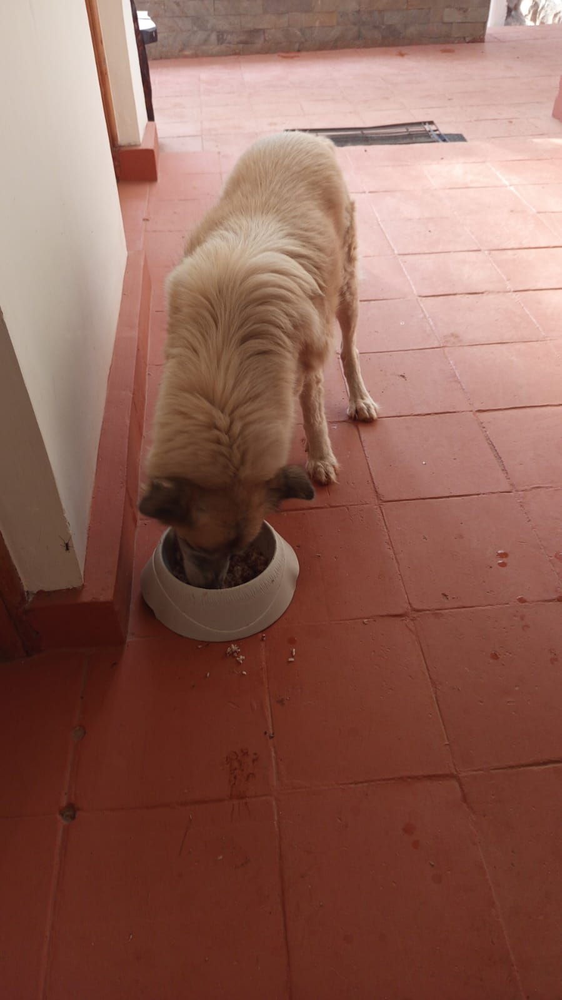

Mucheru World of Golf
Comprehensive golf course engineering, heavy earthmoving, green sub-base foundation construction, and agronomic works advanced under the oversight of Mr. Gichuhi and Ken:
- Delivery & Staging of Dam Liner: A commercial delivery of heavy-gauge industrial dam liner arrived safely on site today. The large rolls were unloaded by the field crew and staged near the water catchment basin, ready for deployment across the excavated dam reservoirs.
- Dam 3 Embankment Earthworks & Liner Preparation: Structural embankment earthworks and slope profiling continued on Dam 3. The lime-green ACE loader and farm tractor trailer hauled and compacted structural fill along the perimeter embankments, establishing proper batter angles and clean surfaces for liner installation.
- Dam 1 Anchor Trench Excavation: Site crews excavated dedicated anchor trenches around the perimeter crest of Dam 1, engineered to lock and key-in the edges of the dam liner upon laying.
- Dam 2 Structural Fill Haulage & Drainage Connection: The farm tractor trailer was loaded with structural soil using Githinji's loader to build up and reinforce the embankments of Dam 2 and Dam 3. In addition, the subgrade drainage trenching from Green 5 was fully connected into Dam 2.
- Green 7 Hardcore & Ballast Logistics: The farm tractor tipping trailer was loaded with ballast stone and hardcore rocks using the XGMA front loader to haul material directly to Green 7. The site crew actively placed and hand-packed the hardcore rock foundation layer across the subgrade layout, with placement progressing steadily toward completion.
- Green 17 & Green 13 Red Soil Filling & Boundary Berm: Red volcanic loam was hauled and spread onto Greens 17 and 13 to fill up and grade their surrounds. A dedicated soil boundary barrier was established between Greens 13 and 17, and the protective barrier at Green 6 was pushed further back from the green apron.
- Design Finishing Touches on Greens 18 & 10: Site shapers executed architectural design finishing touches on Green 18 and Green 10, refining surface contours, apron transitions, and gentle water runoff gradients.
- Hedge Manure Delivery (Overseen by Githinji): A full truckload of organic manure arrived on site under the direct supervision of Githinji, staged and prepared for planting perimeter boundary hedges.
- Agronomic Charcoal Dust Application on Palm Tree Holes: Agronomy workers applied charcoal dust soil conditioner into all excavated palm tree planting holes along the perimeter boundary and drip irrigation line to enhance moisture retention and soil aeration.
- Backhoe Loader Operations (6.00 Hours): The Backhoe Loader logged 6.00 operating hours on site, executing material loading, earthmoving, and green shaping activities.
Key Accomplishments — Mucheru World of Golf
Dam liner delivery safely received; Dam 3 embankment and Dam 1 anchor trenches progressing; Green 7 hardcore and ballast hauled with rock base placement actively underway; red soil filled on Greens 17 & 13 with boundary berm sculpted; design finishing touches completed on Greens 18 & 10; hedge planting manure received; charcoal dust applied to palm holes; and 6.00 Backhoe Loader hours logged.
Consolidated operational machinery log recording heavy equipment hours and site deployment for Monday, 21st September 2026:
| Equipment / Machine | Assigned Site Activity | Operating Hours | Hourly Rate (KES) | Total Cost (KES) |
|---|---|---|---|---|
| Backhoe Loader (XGMA) Operated on site |
Loading ballast stone and hardcore rocks into tractor trailer for Green 7, earthmoving on dam embankments, and green contouring | 6.00 hrs | KES 6,500.00 | KES 39,000.00 |
| Total Daily Machinery Utilization | 6.00 hrs | — | KES 39,000.00 | |
📌 Fleet Operations & Material Delivery Log
The Backhoe Loader logged 6.00 operating hours loading hardcore rocks and ballast for Green 7 and supporting site earthworks. In tandem, Githinji's loader loaded the farm tractor trailer with structural fill for Dam 2 and Dam 3 embankment reinforcement. In addition, 1 commercial delivery of industrial dam liner and 1 truckload of organic manure for hedge planting were successfully received on site.
Field documentation capturing dam liner delivery, Dam 2 & 3 earthworks, Green 7 foundation rock packing, and boundary berm sculpting.
Comprehensive 18-hole putting green status ledger detailing foundation bases, pumice compaction, contouring, and drainage connections. Highlighting incremental updates on September 21, 2026:
| Green | Current Technical & Agronomic State | Milestone Status |
|---|---|---|
| Green 1 | Volcanic pumice stone sub-base mechanically compacted with vibratory roller compactor (Sep 19); red loam spread; pumice aggregate leveled; subgrade drainage trenched (Sep 15). | Pumice Compacted |
| Green 2 | Volcanic pumice stone sub-base mechanically compacted with vibratory roller compactor (Sep 19); red loam spread; pumice aggregate leveled; subgrade drainage trenched (Sep 15). | Pumice Compacted |
| Green 3 | Volcanic pumice stone sub-base mechanically compacted with vibratory roller compactor (Sep 19); red loam spread; fairway 4 approach leveled; subgrade drainage trenched (Sep 15). | Pumice Compacted |
| Green 4 | Volcanic pumice stone sub-base mechanically compacted with vibratory roller compactor across bean-shaped complex (Sep 19); architectural contouring complete (Sep 16); drainage trenched. | Reshaped & Pumice Compacted |
| Green 5 Today | Subgrade drainage trenching line now fully connected into Dam 2 outfall (Sep 21); ready; fully established mature championship putting green turfgrass under active sprinkler irrigation. | Turf Ready • Drainage Tied |
| Green 6 Today | Raised soil barrier berm pushed further back from green apron along perimeter (Sep 21); elevated soil border berm shaped between Green 6 and Green 15; subgrade drainage cut. | Apron Barrier Adjusted |
| Green 7 Today | Hardcore rocks and ballast stone hauled via farm tractor trailer; manual placing and hand-packing of hardcore foundation bed actively in progress by crew (Sep 21); subgrade drainage trenched. | Hardcore Bed In Progress |
| Green 8 | Riversand applied earlier remains unleveled; clean riversand delivery received on site stockpile (Sep 20); red volcanic loam spread; subgrade drainage trenches excavated (Sep 15). | Riversand Unleveled |
| Green 9 | Architectural shaping completed; red volcanic loam spread; volcanic pumice applied, graded, and compacted; subgrade drainage trenches excavated (Sep 15). | Trenched & Pumice Graded |
| Green 10 Today | Design finishing touches completed across green surface and surrounds (Sep 21); boundary with Green 15 reshaped; volcanic pumice compacted with vibratory roller (Sep 20); apron expanded; drainage cut. | Design Touches • Compacted |
| Green 11 | Volcanic pumice sub-base compacted with vibratory roller compactor; Joe's crew filled unlevelled low spots with pumice during compaction (Sep 20); hardcore stabilized; membrane placed; drainage cut. | Pumice Compacted |
| Green 12 | Volcanic pumice sub-base compacted with vibratory roller compactor; Joe's crew filled unlevelled low spots with pumice during compaction (Sep 20); hardcore packed; membrane placed; drainage cut. | Pumice Compacted |
| Green 13 Today | Red soil hauled and spread to fill up and grade green surrounds; protective soil boundary barrier constructed between Green 13 and Green 17 (Sep 21); volcanic pumice sub-base compacted (Sep 20); drainage cut. | Red Soil Filled • Boundary Berm |
| Green 14 | Volcanic pumice sub-base compacted with vibratory roller compactor; Joe's crew filled unlevelled low spots with pumice during compaction (Sep 20); subgrade drainage trenched (Sep 15); hardcore base and membrane installed. | Pumice Compacted |
| Green 15 | Boundary with Green 10 reshaped; volcanic pumice compacted with vibratory roller, with Joe's crew backfilling unlevelled depressions with pumice (Sep 20); outfall drainage connected to Dam 1 (Sep 17); membrane placed. | Boundary Reshaped • Compacted |
| Green 16 | Volcanic pumice sub-base compacted with vibratory roller compactor; Joe's crew filled unlevelled low spots with pumice during compaction (Sep 20); hardcore foundation bed packed; membrane installed; drainage cut. | Pumice Compacted |
| Green 17 Today | Red soil hauled and spread to fill up and grade green surrounds; protective soil boundary barrier constructed between Green 17 and Green 13 (Sep 21); volcanic pumice sub-base compacted (Sep 20); membrane installed. | Red Soil Filled • Boundary Berm |
| Green 18 Today | Design finishing touches completed across organic bean-shaped complex and approach (Sep 21); volcanic pumice sub-base compacted with vibratory roller compactor (Sep 20); hardcore fractured; drainage cut. | Design Touches • Compacted |
Comprehensive 18-hole championship teebox platform audit tracking precision earthwork leveling, structural embankments, and playing corridor alignments. Preserved day-to-day continuity as of September 21, 2026:
| Teebox | Current Technical & Earthwork State | Platform Status |
|---|---|---|
| Tee 1 | Platform leveled, graded, and compacted with mass murram fill during course bulk earthmoving. | Platform Leveled |
| Tee 2 | Foundation fill dumped and platform rough-leveled using 8 tipper truckloads of structural fill. | Fill Placed & Leveled |
| Tee 3 | Foundation fill dumped and platform rough-leveled using 8 tipper truckloads of structural fill. | Fill Placed & Leveled |
| Tee 4 | Championship launch platform precision-graded and leveled to design elevation. | Precision Leveled |
| Tee 5 | Playing platform leveled, compacted, and adjusted to align with fairway playing corridor. | Platform Compacted |
| Tee 6 | Precision leveling and compaction completed along the boundary tree corridor. | Platform Leveled |
| Tee 7 | Dual launch platforms completely reshaped and precision contour-leveled using XGMA backhoe loader (Sep 20); elevated plateaus reinforced and perimeter protective earth berms sculpted along fence line. | Dual Platforms Reshaped |
| Tee 8 | Graded, leveled, and contour-adjusted to match fairway transitions and surrounds. | Contour Adjusted |
| Tee 9 | Playing platform leveled and surrounding perimeter ground graded (Sep 1). | Platform Leveled |
| Tee 10 | Graded and compacted platform serving the start of the back-nine playing corridor. | Platform Compacted |
| Tee 11 | Rough shaping, elevation grading, and Backhoe subsoil leveling completed (Sep 7). | Shaped & Graded |
| Tee 12 | Dual platforms established: primary championship tee resized; new forward Ladies' Tee platform constructed (Sep 5). | Dual Platforms Complete |
| Tee 13 | Playing platform completely reshaped, contour-leveled, and perimeter shoulders graded to match fairway transition (Sep 16). | Reshaped & Leveled |
| Tee 14 | Playing platform reshaped, elevation precision-leveled, and protective boundary embankment reinforced (Sep 16). | Reshaped & Leveled |
| Tee 15 | Playing platform completely shaped and contour-leveled with backhoe loader (Sep 19); primary irrigation tie-in zone established; main HDPE waterline laid along boundary trench (Sep 15). | Shaped & Leveled |
| Tee 16 | Playing launch platform completely reshaped and precision-leveled using XGMA backhoe loader (Sep 20); surface contours profiled to integrate cleanly with fairway approach corridor. | Reshaped & Leveled |
| Tee 17 | Playing platform widened and expanded to increase launch surface area; filled, compacted, and edge transitions graded (Sep 16). | Widened & Leveled |
| Tee 18 | Championship tee platform leveled; perimeter approach cleared and graded (Sep 1). | Platform Leveled |
Operations Synthesis
Course engineering and agronomy achieved substantial milestones on Monday, 21st September 2026. A heavy commercial shipment of industrial dam liner arrived and was staged for deployment. Dam 3 embankment earthmoving advanced alongside perimeter anchor trenching at Dam 1. Green 7 foundation construction progressed with farm tractor haulage of ballast and hardcore rocks and manual hand-packing of the rock base underway. Red soil infill was completed across Greens 17 and 13 with an earthen boundary berm sculpted between them, and Green 6's barrier was pushed back from the apron. Design finishing touches were finalized on Greens 18 and 10, Green 5 outfall drainage was tied into Dam 2, hedge planting manure was delivered under Githinji, charcoal dust was applied to palm planting holes, and 6.00 operating hours were logged on the Backhoe Loader.
Sequential field photography capturing dam liner arrival, dam embankment earthworks, Green 7 hardcore and ballast placement, red soil infill, boundary barriers, design touches, and agronomy:

Dam Liner Delivery Arrival
Field team unloading large rolls of heavy-gauge industrial dam liner from the transport lorry at the water catchment basin depot.

Dam Liner Rolls Staged on Site
Full commercial rolls of UV-stabilized geomembrane dam liner positioned on site ground, staged for reservoir lining.

Dam 3 Embankment & Liner Staging
Panoramic view of Dam 3 embankment slopes with red tractor tipping trailer in the background and dam liner rolls staged along the crest.

Dam 3 Embankment Earthworks
Lime-green ACE loader shaping and profiling the inner batter slope of Dam 3 in preparation for liner installation.

Dam 3 Embankment Crest & Slope Grading
Compacted soil embankment ridge along Dam 3 with heavy loader machine establishing uniform grade contours.

Dam 3 Basin Earthmoving
Wide perspective of the excavated Dam 3 reservoir basin showing smoothed floor and surrounding reinforced earthen embankments.

ACE Backhoe Profiling Dam 3 Ridge
Rear view of the ACE backhoe loader actively packing and contouring the top embankment ridge of Dam 3.

Dam 2 Basin & Embankment Overview
Aerial survey capturing the excavated basin of Dam 2 with perimeter embankments prepared for structural fill and lining.

Dam 2 Contoured Slopes Survey
High-angle perspective showing the smoothed basin floor, perimeter slopes, and access haulage road at Dam 2.

Dam 2 Perimeter Embankment Berm
Ground-level perspective of the earthen embankment berm along Dam 2 showing compacted fill and clean slope transitions.

Green 5 Drainage Outfall Connected to Dam 2
Aerial view showing the subgrade drainage trench from Green 5 fully excavated and connected into the Dam 2 reservoir basin.

Hauling Ballast to Green 7
Green LIMA tractor with red tipping trailer hauling a full load of aggregate ballast stone directly to the Green 7 subgrade bed.

XGMA Loading Hardcore Rocks
Yellow XGMA backhoe loader tipping hardcore foundation rocks into the tractor trailer for site transport.

XGMA Transporting Hardcore Aggregate
XGMA loader carrying large fractured hardcore stones in its front bucket across the course layout.

Green 7 Hardcore Bed Placement (Aerial View)
Aerial view of Green 7 showing drainage trenches, stockpiles of ballast stone, and the partially hand-packed hardcore rock foundation bed.

Crew Hand-Packing Hardcore on Green 7
Site construction crew manually placing, interlocking, and packing hardcore rocks within the Green 7 subgrade grid.

Red Soil Infill on Greens 17 & 13
Fresh red volcanic loam dumped and spread along the apron perimeter of Green 17 to fill depressions and establish uniform grades.

XGMA Spreading Red Soil on Greens
XGMA backhoe loader leveling and spreading red soil fill adjacent to the compacted green foundation bed.

Boundary Berm Between Greens 13 & 17
Raised linear soil barrier berm constructed between Greens 13 and 17 to separate playing zones and direct runoff water.

Earthen Boundary Barriers Overview
Continuous line of sculpted earthen mounds defining the boundary corridor between Greens 13 and 17.

Green 6 Boundary Barrier Adjustment
Aerial view of Green 6 showing the protective boundary berm pushed further back from the green apron to expand playing surrounds.

Design Finishing Touches on Greens 18 & 10
Operatives using shovels to perform fine contour sculpting and edge feathering during design finishing touches on the greens.

Manure Delivery for Hedge Planting
Commercial lorry discharging organic manure under the oversight of Githinji for planting perimeter boundary hedges.

Charcoal Dust Soil Conditioning for Palms
Agronomy worker pouring fine charcoal dust into palm tree planting holes along the boundary fence and drip irrigation circle.
Chaka Farms
Dairy livestock operations, working canine care, compound maintenance, and fleet servicing were executed at Chaka Farms on Monday, 21st September 2026:
- Gross Dairy Milk Yield (5.0 Litres): Total daily milk harvest reached 5.0 Litres, comprising 3.0 Litres harvested during the morning milking session and 2.0 Litres recorded during the evening session under the supervision of Kamandau.
- Goat Kids Milk Nutrition Ration (1.0 Litre): A dedicated nutrition ration of 1.0 Litre was drawn from the daily harvest to feed the young goat kids (0.5 Litre morning ration and 0.5 Litre evening ration).
- Net Remaining Farm Reserve Balance (4.0 Litres): Following the deduction of the 1.0 Litre goat kid nutrition ration, an exact net balance of 4.0 Litres was retained in the farm reserve.
- Canine Unit Care, Cooking & Exercise (Overseen by Mwangi): Comprehensive care for the farm's working canine unit was conducted, featuring thorough cleaning and sanitation of kennel stalls, preparing and cooking fresh nutritious dietary meals, and conducting structured on-leash walking exercises.
- General Compound Cleanliness & Upkeep (Margaret & Monica): Margaret and Monica maintained pristine compound hygiene, sweeping pathways, tending garden borders, and clearing organic litter.
- Tractor Greasing & Fluid Service (Overseen by Kinoti): Fleet maintenance was executed on the farm tractor, applying fresh heavy-duty grease to the tipping trailer pivot joints and hinge pins using a grease gun, and topping up Shell Spirax transmission and hydraulic oil.
Daily Accomplishment Highlights — Chaka Farms
Dairy milk yield logged at 5.0 Litres gross; all young goat kid rations disbursed on schedule (1.0L total); net balance of 4.0 Litres secured in farm reserve; canine kennel cleaning, cooking, and on-leash walking completed; compound cleanliness maintained; and tractor greasing and Shell Spirax fluid service completed under Kinoti.
Quantitative breakdown of gross dairy production, scheduled nutrition disbursements, and net farm inventory for Monday, 21st September 2026:
| Production / Allocation Category | Morning Session | Evening Session | Daily Total | Accounting Impact |
|---|---|---|---|---|
| Gross Dairy Cow Milk Production | 3.0 L | 2.0 L | 5.0 L | Gross Inflow (Total Harvested) |
| Goat Kids Milk Ration | 0.5 L | 0.5 L | - 1.0 L | Disbursement (Nutrition Ration) |
| Total Allocations & Disbursements Deducted | - 1.0 L | Total Outflow | ||
| Net Remaining Farm Reserve Balance | 4.0 L | Net Farm Inventory | ||
📌 Dairy Ledger Reconciliation Note
In strict compliance with farm accounting standards, all milk yields are recorded in Litres (L). Nutrition disbursements for young goat kids (1.0L total) are deducted directly from the gross harvest (5.0L), yielding an exact net farm reserve balance of 4.0 Litres.
Attentive daily care, nutritional dietary preparation, kennel sanitation, and leashed exercise routines were conducted for the Chaka Farms working canine unit under the direct oversight of Mwangi for Monday, 21st September 2026:
- Kennel Cleaning & Sanitation: Thorough washing, waste clearing, and hygiene disinfection of the kennel stalls and sleeping quarters were performed to maintain clean, comfortable, and sanitary living conditions.
- Nutritional Meal Preparation (Cooking for the Dogs): Mwangi prepared and cooked wholesome, balanced dietary meals for the canine unit dogs, ensuring proper nutrition, hydration, and overall health.
- Structured Leashed Walking Exercise: The dogs were exercised through disciplined on-leash walking sessions around the farm perimeter pathways, reinforcing leash manners, physical fitness, and behavioral control.
Key Accomplishments — Canine Unit Care
Kennel stalls thoroughly sanitized; nutritious meals freshly cooked and served; and structured on-leash walking exercise completed under Mwangi's oversight.
Field photography documenting tractor mechanical servicing, grease application, and transmission fluid top-up overseen by Kinoti:

Trailer Hinge Greasing
Fresh grease applied to the pivot hinges and mounting brackets of the tractor tipping trailer under Kinoti's maintenance oversight.

Pivot Joint Lubrication
Detailed view of fresh heavy-duty grease extruded around the pivot pin bushing to prevent mechanical wear during heavy tipping operations.

High-Pressure Grease Gun Equipment
Lever-action grease pump canister and nozzle utilized by Kinoti for lubricating all tractor and trailer chassis grease nipples.
.jpeg)
Shell Spirax Transmission Fluid Top-Up
Canister of Shell Spirax heavy-duty transmission and hydraulic oil staged beside the tractor drive wheel for system fluid top-up.
Kabete Residence
Civil works, foundation layout, security systems maintenance, and domestic pet care were conducted at Kabete Residence, with operations overseen and field updates shared by Njoki on Monday, 21st September 2026:
- Ground Level Drawing & Grid Alignment Works: Technical layout marking was executed on site. Using builder's line strings, stakes, and white chalk/lime powder, the team marked out precise ground-level foundation lines and column grid intersections on the prepared red soil base.
- Foundation Trench Digging in Progress: Following the marked grid alignment, the construction crew actively commenced manual excavation of foundation trenches beneath the building overhang. Operatives utilized picks and shovels to dig out red soil and excavate structural footings down to firm bearing ground.
- Security CCTV Screen Restored: The main security camera monitoring display was successfully repaired and restored to full operation, with all multi-channel surveillance feeds active and clearly visible on the central display screen.
- Resident Pets Care: Routine feeding and attentive care were provided for the Kabete resident pets—Ajabu the Golden Retriever was fed at the patio, and resident cats (Reo, Mocha & Aiko) were served their meals side by side in stainless steel bowls.
Key Accomplishments — Kabete Residence
Ground-level foundation grid lines marked with lime string alignments; foundation trench excavation actively progressing beneath the overhang; security CCTV display monitor fully restored; and domestic pets (Ajabu, Reo, Mocha & Aiko) fed and cared for under Njoki's operational oversight.
Sequential field photography documenting ground layout markings, foundation trench digging, security CCTV restoration, and resident pets care:

Foundation Grid Layout Markings
Construction crew setting out foundation column footings and trench lines using white lime powder and alignment strings on the red soil bedrock.

String Line & Grid Alignment
Operatives checking squareness and dimension accuracy along builder's string lines and lime markings in front of the access ladder.

Trench Corner & Column Markings
Detailed view of perimeter footing intersections and rebar alignment markers set into the red soil foundation bed.

Foundation Excavation Under Overhang
Excavation team in high-visibility safety vests actively digging foundation trenches beneath the building overhang with shovels and picks.

Deep Foundation Trench Excavation
Crew excavating structural foundation trenches into red volcanic subsoil, piling excavated earth for clearance.

Security CCTV Monitor Restored
Central security surveillance monitor restored to full operation, displaying live multi-channel camera views of residence grounds.

Ajabu the Golden Retriever
Ajabu enjoying his daily nutritional meal from his feeding bowl on the tiled patio veranda.

Resident Cats (Reo, Mocha & Aiko)
Resident cats Reo, Mocha, and Aiko feeding side by side from their stainless steel bowls at the residence.
Amani Cottage
Routine grounds maintenance, landscaped lawn irrigation, and exterior cleaning were carried out at Amani Cottage under the direct supervision of Edwin on Monday, 21st September 2026:
- Lawn & Garden Irrigation: Edwin conducted thorough sprinkler and hose irrigation across the front lawn turf and landscaped garden borders to maintain lush green growth and deep rootzone moisture.
- Compound & Walkway Sweeping: Comprehensive sweeping was completed across the entire compound, clearing dry leaves, twigs, and dust from paved paths, gravel driveways, and lawn surrounds.
- Washing the 3 Balconies: Detailed pressure washing and manual scrubbing were executed across all three balconies of the cottage, removing accumulated dust, washing tiled surfaces, and leaving all outdoor living areas immaculate.
Key Accomplishments — Amani Cottage
Front lawn and garden areas fully irrigated; compound pathways and driveways swept clean; and all 3 cottage balconies thoroughly washed and spotless under Edwin's supervision.